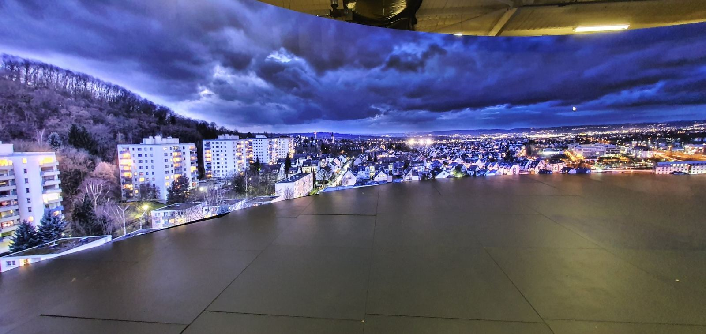

Set pieces
Custom scenic elements, walls, booths, features, practical parts and studio-ready builds.

MM Design supports film, studio and creative teams with set pieces, props, scenic elements, foam forms, finishing and workshop problem solving from Canberra.
Production support
Film and studio work often needs fast iteration, unusual materials, practical construction and a clear understanding of how the object will be used on set.
We can help with early concept development, fabrication planning, prop builds, scenic pieces, digital fabrication, finishing and install-ready set elements for productions in Canberra and across Australia.

What we make
Custom scenic elements, walls, booths, features, practical parts and studio-ready builds.
Hero props, background props, oversized forms, specialty objects and one-off practical pieces.
Large shapes, carved forms, robotic-milled elements and hard-coated foam pieces.
CNC routing, 3D printing, CAD support, templates and repeatable parts for production.
Sanding, filling, painting support, polymer spray finishing and paint-ready preparation.
Workshop backup, fast fixes, install support and practical fabrication problem solving.
Why MMD
A set piece is not just a drawing. It needs to fit the schedule, handle transport, survive use, photograph well and be practical for the production team.
Scene, scale, deadline, finish, handling and production requirements.
Work out the fastest practical way to make the object or set element.
Build, route, print, mill, coat and finish through the workshop.
Pack, transport, install or hand over ready for art department use.
Need props or scenic fabrication?
Include size, finish, deadline, whether it is hero or background, and how it needs to be used on set.